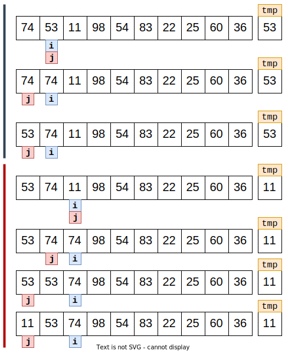
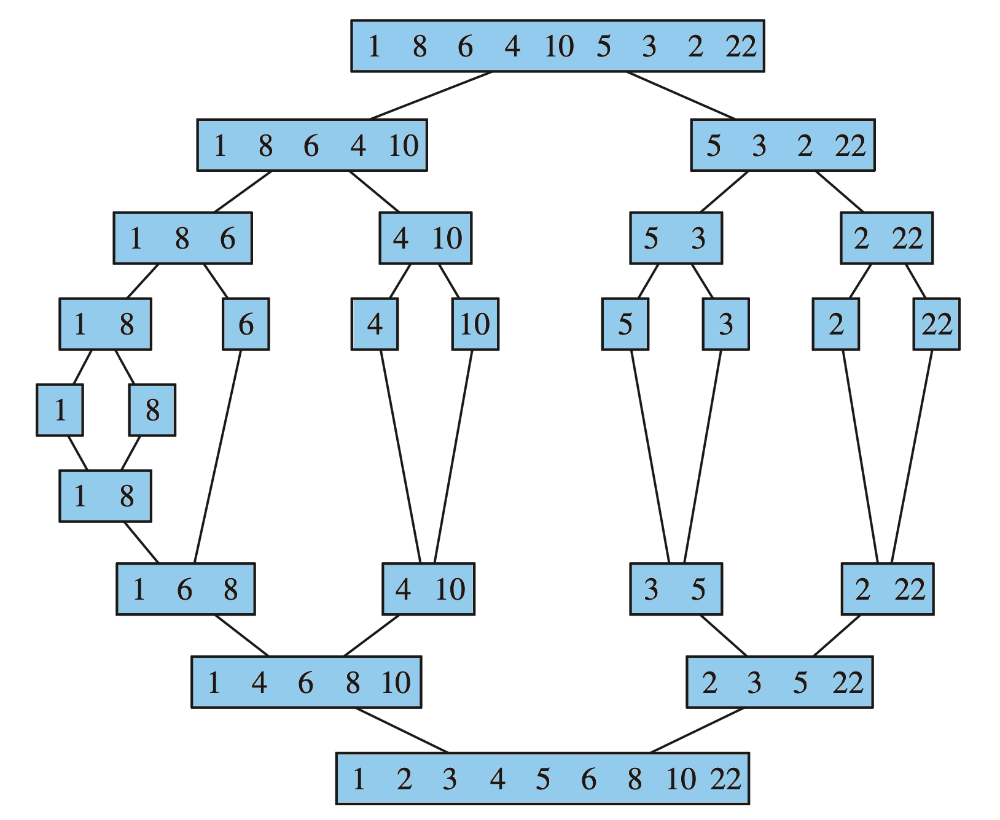
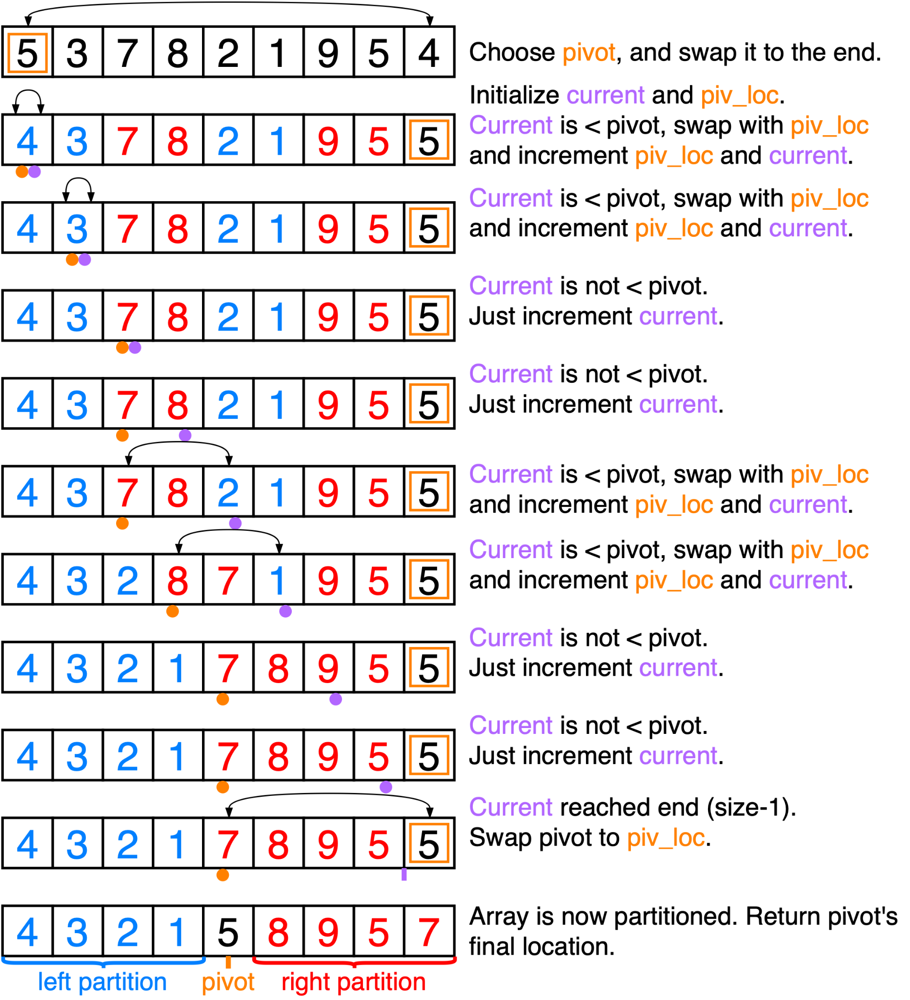

Efficient Sorting
📚 Drozdek (Ch. 9.1, 9.3)
First - Simple sorting (may be review)
We will look at (or review) the following “simple” sorting algorithms:
- Bubble Sort
- Selection Sort
- Insertion Sort
Bubble Sort
To get an array A into ascending order:
bubble_sort(`A[]`, `size`):
do the following until the array is sorted:
for each pair of elements in the array:
compare the pair to see if they are in order:
if not, swap the values and make note
that the array still isn't fully sorted;Complexity
Let \(N\) represent the size of the array.
- The outer loop in will run at most \(N-1\) times.
- The inner loop (without any optimizations) will run \(N-1\) times.
- Thus, there will be at most \((N-1) \times (N-1) \approx N^2\) swaps.
Overall complexity: \(O(N^2)\)
See Drozdek Ch. 9.1 for more thorough analysis.
Selection Sort
To get an array A into ascending order:
selection_sort(A[], size):
for i = 0 to size-1:
Find the index of the smallest element
in the rest of A (the sub-array from
A[i+1] through A[size-1]); call it min;
swap A[i] with A[min];Complexity
Let \(N\) represent the size of the array.
- The outer loop in will run at most \(N-1\) times.
- The inner loop runs one fewer times each time the outer loop iterates. So, the inner loop’s total iterations is the series \(\lbrace N-1, N-2, \dots, 2, 1 \rbrace\)
- Thus, there will be about \(\frac{m(m+1)}{2}\) swaps, where \(m=(N-1)\). Getting rid of the constant factors, we can see that the largest contribution is approximated by \(N^2\).
Overall complexity: \(O(N^2)\)
See Drozdek Ch. 9.1 for more thorough analysis.
Insertion Sort
insertion_sort(A[], size):
for i = 1 to size-1:
move all elements data[j] greater than
data[i] right by one position;
place data[i] in its proper position;
More specifically
insertion_sort(A[], size):
for i = 1 to size-1:
tmp = data[i];
for j = i, counting backward until 0, and while tmp < data[j-1]:
data[j] = data[j – 1];
data[j] = tmp; Insertion Sort - First two iterations illustrated.
Insertion sort - first two steps
Complexity
Let \(N\) represent the size of the array.
- The outer loop in will run exactly \(N-1\) times.
- The inner loop’s run time depends on the order of the values, but can be roughly approximated by a constant factor of \(N\).
- Thus, the whole thing can be summarized as \(O(N^2)\).
Overall complexity: \(O(N^2)\)
See Drozdek Ch. 9.1 for more thorough analysis.
More efficient algorithms
Now, let’s consider the following more efficient sorting algorithms:
- Heap sort
- Quick sort
- Merge sort
- Radix sort
Heap Sort
heap_sort(A[], size):
make A into a max-heap, usually with the bottom-up _make-heap_ algorithm;
for i = 0 to size-1:
heap_remove(A, size); // size is reduced by 1 each time
Expanding the heap_remove function inline, we get:
heap_sort(A[], size):
make A into a max-heap, usually with the bottom-up _make-heap_ algorithm;
for i = 0 to size-1:
swap A[0] with A[size];
size--;
_sift-down_ A starting at index 0 to restore the heap property;Make Max-Heap algorithm:
// bottom-up version
make_max_heap(A[], size):
current = size-1;
while current > 0:
parent = index of parent of A[current];
_sift-down_ A starting at index parent;
current = parent;Sift-down algorithm
sift_down(A[], start_index, size):
current = start_index;
while left_child(current) < size:
i_max = index of child with maximum value;
if A[i_max] > A[current]:
swap A[i_max] with A[current];
current = i_max;Complexity
Let \(N\) represent the size of the array.
- The bottom-up make heap algorithm has \(O(N)\) asymtotic complexity.
- The loop runs \(N-1\) times.
- for each iteration of the loop, the heap remove algorithm needs to perform a swap and a sift-down. The complexity of sift-down is \(O(\lg(N))\).
- Thus, overall complexity is \(O(N) + N \cdot \lg(N)\) steps, which is dominated by the \(N\cdot \lg(N)\) term.
Overall complexity: \(O(N\cdot \lg(N))\)
See Drozdek Ch. 9.3 for more thorough analysis.
Merge Sort
Merge Sort is a classic divide-and-conquer approach. We first saw this approach with the binary search algorithm, and we saw how it led to a much improved search time. Let’s see how it helps with the problem of sorting.
In Merge Sort, we will split the array into two halves, then recursively sort those halves and merge the resulting arrays back together.
Takes advantage of divide-and-conquer, and the fact that sorting fewer elements is “easier” than sorting many.
Merge Sort Algorithm
merge_sort(A[]):
if A[] contains at least two elements:
merge_sort( left half of A[] );
merge_sort( right half of A[] );
merge( both halves );
Drozdek, Figure 9.14
Merge Sort
Merge Sort
Drozdek, Figure 9.14
Merge algorithm
merge(A_out[], A_in_1[], A_in_2[]):
let i1, i2 be properly initialized indices for A_in_1 and A_in_2;
let i_out be a properly initialized index for A_out;
while both A_in_1 and A_in_2 contain elements
if A_in_1[i1] < A_in_2[i2]:
A_out[i_out++] = A_in_1[i1++];
else A_out[i_out++] = A_in_2[i2++];
copy into A_out the remaining elements of
either A_in_1 or A_in_2 (whichever isn't empty);
Let’s look at the complexity:
You must take exactly enough “forward” steps to fill the output array, which is size \(N\)… So \(O(N)\).
Although in practice we often aren’t merging the whole array - we are merging sub-arrays whose size \(n << N\).
Most merge steps are much faster!
Merge Sort Summary
Drozdek, Figure 9.14
- To sort \(N\) numbers
- if \(N=1\) done!
- recursively sort 2 lists of numbers with \(\lceil N/2 \rceil\) and \(\lfloor N/2 \rfloor\) elements.
- merge 2 sorted lists in \(O(N)\) time
merge_sort(A[]):
if `A[]` contains at least two elements:
merge_sort(_left half of `A[]`_);
merge_sort(_right half of `A[]`_);
merge(both halves);
Complexity
- To sort \(N\) numbers
- if \(N=1\) done! (\(O(1)\))
- recursively sort 2 lists of numbers with \(\lceil N/2 \rceil\) and \(\lfloor N/2 \rfloor\) elements.
- How many times can we split?
- merge 2 sorted lists in \(O(N)\) time \(O(N)\)
- But how many times must we merge (same number as the number of splits)?
If we split an array of \(N\) items in “half” - how many times can we do this? How many times can you divide an integer by 2 (integer arithmetic) before it becomes 1?
This is the base-2 logarithm. You can split an array of \(N\) elements in half \(\lg(N)\) times before it becomes trivially small.
Complexity
- To sort \(N\) numbers
- if \(N=1\) done! (\(O(1)\))
- recursively sort 2 lists of numbers with \(\lceil N/2 \rceil\) and \(\lfloor N/2 \rfloor\) elements.
- Must happen \(lg(N)\) times…
- merge 2 sorted lists in \(O(N)\) time \(O(N)\)
- Must happen \(lg(N)\) times…
Overall complexity: \(O(N \cdot \lg(N) )\)
See Drozdek Ch. 9.3 for more thorough analysis.
Quick Sort
Quick Sort (or QuickSort; some authors make it one word) divides the array into two halves, and sorts those halves recursively.
A pivot element is chosen, then all elements greater than the pivot are moved to its right, and all elements less than the pivot are moved to its left.
The left and right sub-arrays are then sorted recursively.
Algorithm
quick_sort(A[], left_index, right_index):
if the array between left_index and right_index is not empty:
let pivot := _choose index of pivot element_;
Partition A about the value at A[pivot], storing the final
location of A[pivot] in the variable split;
Recursively quick_sort the left sub-array from left_index to split-1.
Recursively quick_sort the right sub-array from split+1 to right_index.Algorithm (more detailed)
// a "starter" function to give the expected function interface:
quick_sort(A[], size):
quick_sort_helper (A, 0, size-1);
// and a "helper" to do the recursive sorting:
quick_sort_helper(A[], left_index, right_index):
if left_index <= right_index:
let pivot := _choose index of pivot element_;
Partition A about the value at A[pivot], storing the final
location of A[pivot] in the variable split_index;
quick_sort_helper (A, left_index, split_index-1); // sort left partition
quick_sort_helper (A, split_index+1, right_index); // sort right partitionIn-place Partitioning
// left is the index of the leftmost element of the array
// right is the index of the rightmost element of the array (inclusive)
partition(A[], left_index, right_index, pivot_index):
pivot_value = A[pivot_index];
swap A[pivot_index] with A[right]; // Move pivot to end
split_index = left;
for i = left to right - 1:
if A[i] < pivot_value:
swap A[i] with A[split_index];
split_index = split_index + 1;
swap A[split_index] with A[right]; // Move pivot to its final place
return split_index;In-place Partitioning
This figure shows the first element being chosen for pivot for simplicity. We will see in later slides that this might not be a good choice.
In-place Quicksort (detailed with comments)
quick_sort(A[], size):
quick_sort_helper (A, 0, size-1);
quick_sort_helper(A[], left_index, right_index):
// If the array has 1 or more items
if left_index <= right_index:
// Choose a pivot (how you do this may vary):
pivot_index = choose any $i$ such that left_index $\leq i \leq$ right_index;
// Get subarrays and final position of pivot
split_index := partition(A, left_index, right_index, pivot_index);
// Recursively sort elements smaller than the pivot
quick_sort_helper(A, left_index, split_index - 1);
// Recursively sort elements at least as big as the pivot
quick_sort_helper(A, split_index + 1, right_index);Complexity of Quick Sort
The complexity of Quick Sort depends on how well partition manages to split the array “in half”. Let the array size be given by \(N\).
In the ideal case, if the partitions always manage to split the array perfectly in halves, that action can only take place \(\lg(N)\) times before the sub-arrays dwindle to a single element (or zero). Thus, the recursive steps would only occur \(\lg(N)\) times.
- For each of the recursive steps, you have to consider the time taken to partition the array. The partition agorithm makes a single pass through the array, so it is a linear time algorithm (\(O(N)\)).
Putting it all together, the sort can take place in \(O(N \cdot \lg(N))\) steps, in the optimal case.
However, if the worst case happens and the partition always manages to isolate only one element (the pivot), with all other elements falling into one partition (and the other partition being empty)… You can split an array by that method \(N-1\) times before running out of elements in the largest sub-array. That gives a complexity of \(O(N^2)\)!
Complexity: \(O(N \cdot lg(N))\) (average) \(O(N^2)\) (worst)
See Drozdek Ch. 9.3 for more thorough analysis.
Choosing the Pivot
The partition step needs to perform well, and that depends mostly on the choice of the pivot element.
Bad strategy: Avoid choosing the first or last element as the pivot. If the array is already sorted, this will give the worst-case performance. [.tinyTry it on paper to see why…]
Good strategy: Pick an element that is unlikely to depend on the order of the elements, or is likely to be near the median if the elements are already ordered. Some possibilities:
- Randomly choose an element. (Be sure to use a \(O(1)\) random number generator!) No guarantees, but statistically likely not to perform at the worst-case.
- Median-of-Three method:
- Given the indices of the first, middle, and last elements, determine which one holds the median (middle) value. This can be done in constant time (an initialization and two conditional checks). It will (almost always) guarantee that you won’t see the worst-case performance.
Radix Sort
radix_sort(A[], size):
for `d` = 1 to the position of the leftmost digit of
the longest number:
distribute all numbers among piles 0 through 9 according
to the `d`th digit (from right);
put all numbers into one list;
The idea is to maintain 10 “piles” (for base-10 numbers, use \(k\) piles for base-\(k\)).
Each “pile” is usually implemented as a queue.
So, this algorithm requires an array of piles as a secondary data structure to help with the sort.
Radix Sort - Illustrated.

Radix Sort - More precise algorithm
void radixsort (A[], size):
radix = 10; // for base-10 (adjust for other bases)
digits = 10; // the maximum number of digits possible (10 for int)
let piles[radix] := Array of Queues with radix elements;
d = 0;
factor = 1;
while d < digits:
for j = 0 to size-1:
_enqueue_ A[j] into piles[ (A[j] / factor) % radix ];
k = 0;
for j = 0 to radix:
while piles[j] is not empty:
A[k++] = _dequeue_ next value from piles[j];
factor *= radix;
d++;Complexity
Let \(N\) represent the size of the array.
- The outer loop is limited by the number of possible digits \(d\), which we may assume is very small with respect to the size of the array. Usually \(d << N\).
- The first inner loop is \(O(N)\) (linear time).
- The second inner loop runs
radixtimes (we can also assume this is a very small number, so assume \(O(1)\) (constant time)).- The loop inside the second inner loop runs an unknown number of times, but it must necessarily be less than \(N\) (worst case is all elements are in the same pile).
So, radix sort’s complexity is \(O( N\cdot d )\). Assuming \(d << N\), performance characteristics approach constant time as \(N \rightarrow \infty\).
Overall complexity: \(O(N \cdot d )\)
How did we get better than \(O(N \cdot \lg(N))\)?
We allowed the algorithm to consume significant additional space.
See Drozdek Ch. 9.3 for more thorough analysis.

CS 50x2 Accelerated Programming Series

Efficient Sorting